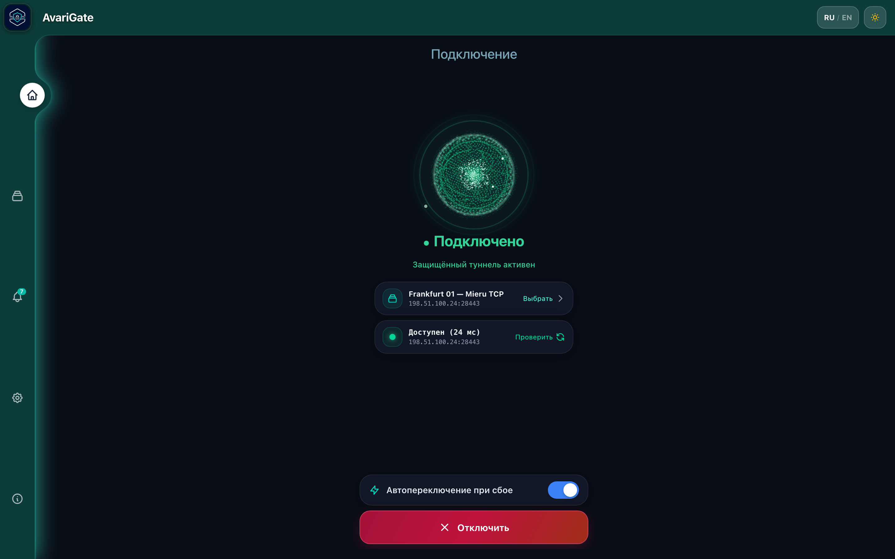

Приватный туннель для свободного интернета
AvariGate — высокоскоростной мультиплатформенный VPN-клиент на Tauri v2 + Rust и Android Compose с защитой от глубокого анализа пакетов (DPI). Объединяет Mieru, Hysteria 2 и AmneziaWG в едином приложении со сверхбыстрым failover и нулевыми привилегиями интерфейса.
curl -fsSL -O https://github.com/OstKost/avari-gate/releases/download/v0.6.0/AvariGate-admin-linux-amd64.tar.gz && tar -xzf AvariGate-admin-linux-amd64.tar.gz && sudo ./mieru-admin setup

Триада передовых протоколов обхода блокировок
Обычные VPN протоколы блокируются эвристиками и DPI за секунды. AvariGate объединяет три независимых решения, специально спроектированных для работы в агрессивных цензурируемых сетях.
Мультиплексированный туннель с маскировкой трафика под случайный шум и надёжной защитой от активного зондирования со стороны DPI-систем (GFW, ТСПУ).
- Анти-сканирование: не отвечает на проверочные запросы цензора
- Мультиплексирование потоков внутри одного TCP-соединения
- Двойная изоляция паролей mita sha256 + 0x00 salt
Молниеносный протокол поверх кастомного UDP/QUIC с обфускацией Salamander. Выжимает максимум скорости даже при высоких потерях пакетов и троттлинге провайдером.
- Обфускация Salamander: трафик выглядит как произвольный UDP
- Маскировка SNI и самоподписанные ECDSA сертификаты
- Борьба с потерями: Brutal Congestion Control до 20–30% потерь
Продвинутая обфускация WireGuard v3.1. Защищает сигнатуры пакетов при рукопожатии и передаче данных, исключая блокировку по WireGuard-паттернам.
- Рандомизация заголовков: параметры Jc, Jmin/Jmax, S1–S4
- Хеширование инициализации H1–H4 и I1–I5
- Поддержка стандартных WireGuard .conf файлов без правок
Создан для непрерывной связи и защиты соединения
Мы не просто завернули стороннее ядро в веб-обёртку: каждый уровень клиента и сервера спроектирован с упором на стабильность соединения и нулевое доверие к привилегиям.
Интеллектуальный Failover
При сбое ноды клиент выполняет до 3 полных обходов резервных профилей с паузами 15 секунд и подключается к первому доступному серверу. Никаких обрывов связи без предупреждения.
Раздельное туннелирование
Режимы Include и Exclude. Маршрутизация по маскам доменов (*.ru, gosuslugi.ru) и CIDR-подсетям. Встроенный переключатель Bypass LAN для локальных принтеров и NAS.
Per-App Split (Android)
На мобильных устройствах выбирайте приложения вручную: банкинг напрямую, а мессенджеры и браузер — через защищённый туннель с нулевой утечкой DNS.
Разделение привилегий
UI работает без прав администратора. Сетевые маршруты и TUN настраиваются демоном mieru-helper через Unix сокет с проверкой UID/PID. Пароли хранятся с правами 0600.
Мгновенный QR-импорт
Серверный TUI генерирует ASCII QR-код прямо в вашем SSH-терминале. Сканируйте его встроенным сканером CameraX + ZXing в Android-клиенте за 1 секунду.
Чистое завершение сессий
Никакого "отвалившегося интернета" после закрытия клиента: при отключении приложение корректно останавливает ядро и восстанавливает системный DNS и таблицу маршрутов.
Авторские темы оформления — выберите свой стиль
Интерфейс не обязан быть скучным серым окном. Переключайте стили одним кликом: тема меняет эстетику и анимации, сохраняя все ваши профили и настройки в полной неприкосновенности.
AvariGate
Кибер-сфера частиц & глубокий космосКлассическое оформление AvariGate: тёмная космическая палитра, неоновые бирюзовые акценты и анимированная центральная сфера состояния с волнами активности при передаче трафика.
Менеджер mieru-admin: всё в одном бинарнике
Никаких сотен зависимостей или разрозненных bash-скриптов. Статический Go-бинарник устанавливает systemd службу, разворачивает протоколы и даёт удобный интерактивный TUI прямо в SSH.
5-шаговый мастер с проверкой diff
Мастер настройки валидирует конфиг до применения. На 5-м шаге вы видите точный unified diff. При ошибке службы система автоматически откатывается на предыдущую ревизию.
Экспорт профилей с QR в терминале
Создавайте пользователей Mieru, Hysteria 2 и AmneziaWG в TUI. Конфигурация выводится в формате hy2://, wireguard .conf и в виде чистого ASCII QR прямо в окно терминала.
Вендоринг и проверка SHA-256
В v0.6.0 устранены сетевые curl|bash уязвимости: скрипты установки AmneziaWG встроены через //go:embed и проверяются по криптографическому SHA-256 хэшу перед запуском.
Локальный REST API + systemd
Служба слушает исключительно 127.0.0.1:9081 с авторизацией по Bearer-токену с правами 0600. Полная готовность для автоматизации и интеграции с Ansible или CI/CD.

Скачать AvariGate v0.6.0
Все пакеты собраны напрямую из открытого исходного кода. Без встроенной рекламы, без трекеров и без ограничений по скорости.
AvariGate macOS
macOS 12+ (M1 / M2 / M3 / M4)AvariGate_0.6.0_aarch64.dmg
~28.6 МБ
AvariGate Android
Android 8+ (arm64-v8a & x86_64)AvariGate-0.6.0-android-debug.apk
~155 МБ
mieru-admin Server
Ubuntu 24.04 / Debian 13 (x86_64)AvariGate-admin-linux-amd64.tar.gz
~5.7 МБ
Пакеты Linux GUI
Ubuntu, Debian (.deb) & Arch (.pkg.tar.zst).deb / .pkg.tar.zst
~15–19 МБ
Честный статус платформ и архитектур:
- macOS Apple Silicon (M1/M2/M3/M4): Готово Релизные .DMG с ad-hoc подписью и launchd-демоном.
- Android 8+ (ARM64 & x86_64): Готово Подтверждено туннелирование TCP Mieru и WireGuard/AWG.
- Linux Server (Ubuntu / Debian x86_64): Готово Принят под systemd, безопасный вендоринг AWG.
- Windows Desktop (10/11): В разработке Служба AvariGateHelper, очистка DNS и автопереключение написаны; сетевая приёмка и сборка в процессе.
- iOS: В планах Архитектурный план NetworkExtension подготовлен, разработка стартует после Windows.
27e9bd16e91a49c985dcc703dad6d9513fe89a504f8ae18e2dc8cddeda2bcbc4 AvariGate-0.6.0-android-debug.apk 850c40f671230b75cc284027027674e242b8aabf2cede9518d94dd24836d9fca AvariGate_0.6.0_aarch64.dmg 7ab6a12d833a6255a6376a7bf44bda7aea38c5f7b4c09248e77941184f8f67cd AvariGate-admin-linux-amd64.tar.gz
Хронология реальных релизов проекта
Каждая строчка подкреплена исходным кодом, unit-тестами и сетевыми проверками в репозитории.
v0.6.0 — Архитектурный рефакторинг, модульность UI и безопасность
19 ноября 2026-
Декомпозиция монолитов UI: 6134 строки десктопного
main.tsразбиты на сфокусированные экранные модули вdesktop/ui/src/screens/; монолитMainScreen.ktна Android сокращён с 3505 до 629 строк. -
Полиморфные профили: внедрён строго типизированный Tagged Union
ProtocolDataв Rust (mieru-shared) иsealed interface ProtocolConfigв Kotlin с сохранением 100% обратной совместимости. - Устранение supply-chain риска: скрипт установки AmneziaWG завендорен локально в Go-бинарник и проверяется по SHA-256 перед запуском с root правами.
-
Декомпозиция Server TUI: мастер первичной настройки и управление пользователями вынесены в отдельные модули
wizard.goиusers_view.go.
v0.5.0 — Android редизайн, живой трафик, QR-сканер и секундомер переключений
19 ноября 2026- Полный редизайн Android: плавающая навигационная капсула, карусель тем, тактильный отклик и сигилы состояния.
- Камера и QR-сканер: встроенный сканер CameraX + ZXing для моментального сканирования Mieru, Hysteria 2, WireGuard и AmneziaWG.
- Подтверждённое живое туннелирование: успешные сетевые тесты TCP Mieru (598 мс) и WireGuard/AWG (421 мс) на эмуляторе с подтверждением обратного трафика.
- Секундомер в Desktop UI: визуализация стадий переключения профилей (stopping, releasing, starting, verifying) с таймером в интерфейсе.
- Генерация QR в Server TUI: вывод QR-кода прямо в терминале при создании или просмотре профиля клиента.
v0.4.0 — Запуск мобильного клиента AvariGate для Android
18 ноября 2026- Android VpnService: интеграция мобильного VPN-ядра с системной службой Android, сохранение сессии в фоне.
- Мультиархитектурность: сборка под arm64-v8a и x86_64, поддержка Android 8.0+ (API 26).
- Единая логика настроек: перенос правил сплит-туннелирования и failover с настольного клиента.
v0.3.0–v0.3.2 — Linux дистрибуция, мультипрофили и темы
17 ноября 2026- Linux пакеты: сборка пакетов .deb для Ubuntu 24.04 и Debian 13, а также .pkg.tar.zst для Arch Linux.
- Темы оформления: релиз авторских тем DragonGate (нефрит и дракон) и CorsairGate (морской штурвал и латунь).
- Мультипрофильность: менеджер нескольких серверов с настраиваемым приоритетом обхода при автопереключении.
-
Серверный TUI: первый релиз интерактивной консоли управления
mieru-adminс поддержкой Hysteria 2 и AmneziaWG.
v0.1.0 — Первый MVP релиз для macOS Apple Silicon
12 ноября 2026- Архитектурный фундамент: связка Tauri v2 + Rust, безопасный launchd-helper и ядро mbox 1.14.3.
- Базовое туннелирование: рабочий TCP Mieru клиент, системный трей macOS и чистая зачистка маршрутов.
Принцип нулевого доверия к интерфейсу
Вредоносный скрипт или взлом UI не смогут захватить систему: сетевые интерфейсы изолированы в отдельном демоне.
Графический интерфейс
Tauri v2 (Rust + Vite) или Jetpack Compose (Android)
UID: Обычный пользователь (Без root)Системный демон (Helper)
launchd (macOS) / Polkit (Linux) / VpnService (Android)
Строгая валидация PID и UIDЯдро enfein/mbox 1.14.3
Mieru 3.38 + Hysteria 2 + AmneziaWG 3.1 + TUN
Таблица маршрутов & DNSЧасто задаваемые вопросы
Всё, что вам нужно знать перед установкой AvariGate.
Стандартные протоколы OpenVPN и базовый WireGuard имеют легко детектируемые сигнатуры рукопожатия и заголовков, которые мгновенно распознаются современными системами DPI (ТСПУ, GFW) и глушатся. Mieru маскирует трафик под HTTPS и блокирует активные зонды, Hysteria 2 использует обфусцированный QUIC Salamander с компенсацией потерь, а AmneziaWG добавляет рандомизацию заголовков и мусорные байты (Jc, S1–S4, H1–H4), делая пакеты неотличимыми от случайного шифрованного трафика.
В AvariGate встроены три авторских стиля оформления: классическая космическая кибер-сфера Avari с неоновыми частицами, императорский нефрит DragonGate с золотым драконом и атмосферный аниме-стиль OtFront. Вы можете мгновенно переключать темы в настройках приложения — они изменяют эстетику интерфейса, сохраняя все ваши профили, маршруты и активные туннели в полной безопасности.
Исходный код открыт на GitHub. Вы можете самостоятельно изучить работу приложения и его обработку данных.
Операционные системы не позволяют обычным непривилегированным программам создавать виртуальные сетевые адаптеры (TUN) и менять системные маршруты. Для этого AvariGate один раз устанавливает легковесный системный демон mieru-helper в launchd через стандартный диалог macOS. Сам GUI-клиент работает от обычного пользователя и общается с демоном через локальный Unix-сокет.
Да, именно для этого создан mieru-admin! Достаточно арендовать любой виртуальный сервер на Ubuntu 24.04 LTS или Debian 13, скачать архив утилиты и выполнить «sudo ./mieru-admin setup». Пошаговый мастер проведёт вас через настройку за 2 минуты, проверит diff конфига и покажет QR-код для моментального подключения с телефона или ноутбука.
Для Windows уже написана служба AvariGateHelper, модуль очистки DNS/маршрутов и алгоритм автопереключения; сейчас завершается сборка и стендовые сетевые испытания. Для iOS подготовлен архитектурный план на базе NetworkExtension API. Мы не обещаем релизов до того, как они пройдут строгую сетевую приёмку. Следите за обновлениями в GitHub Releases!